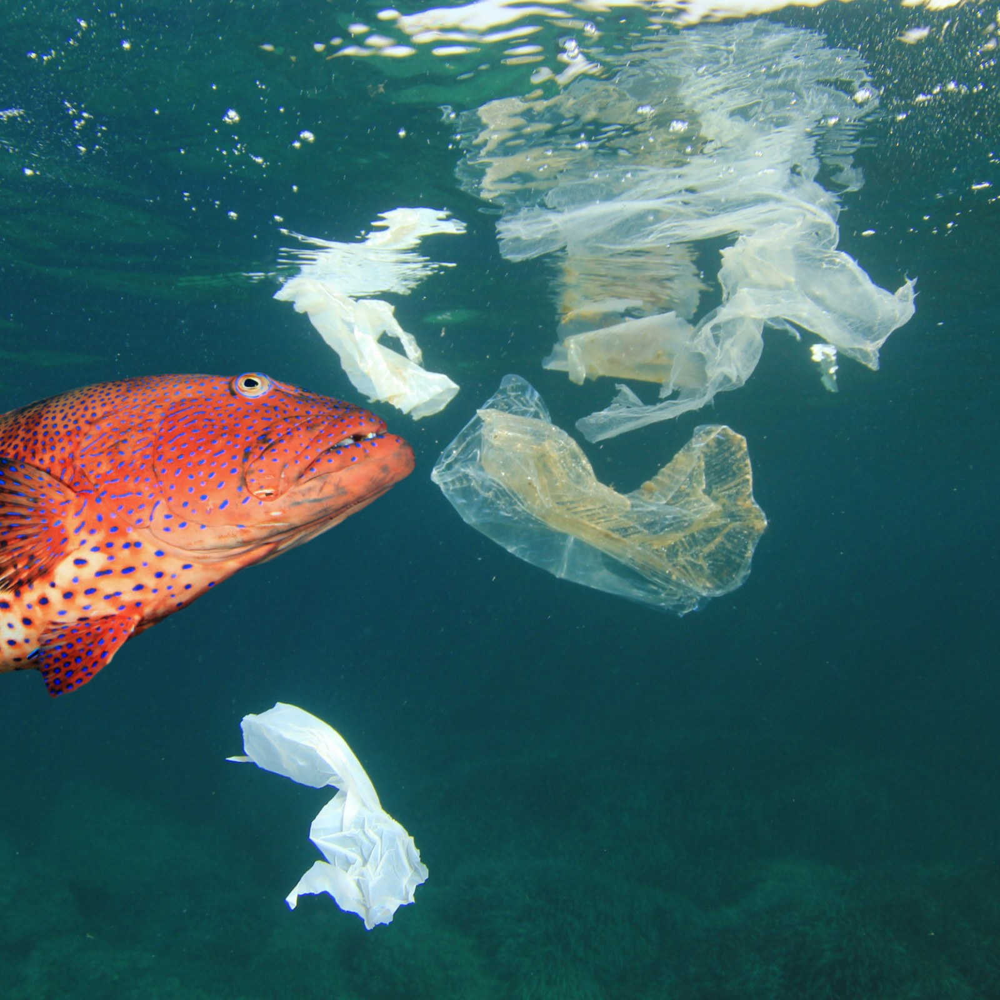
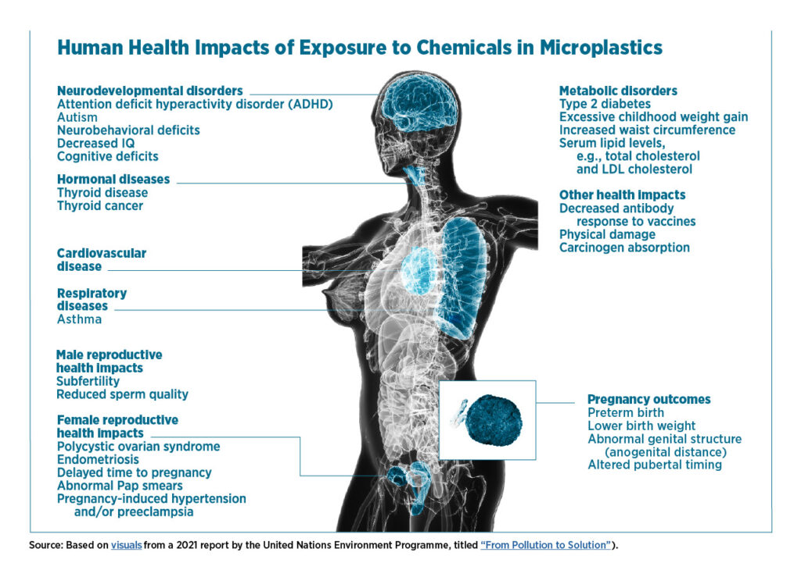
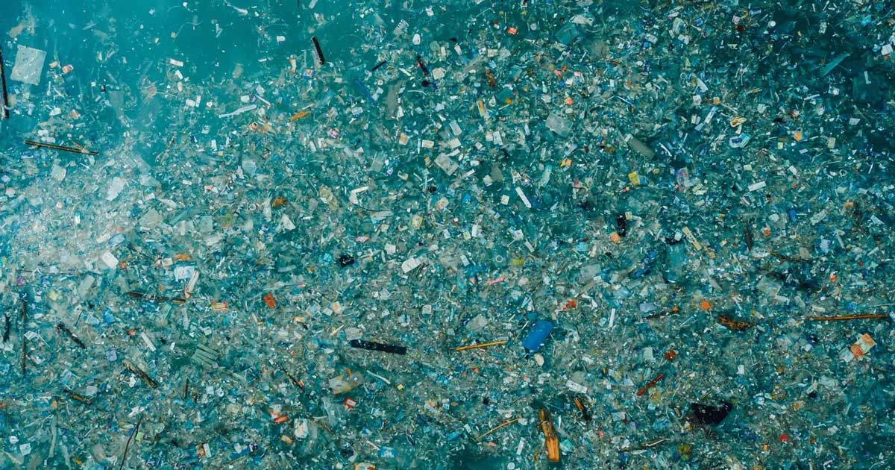

Microplastics in the Marine Food Web
Unfortaunately, a lot of trash makes its way to the oceans and into marine food webs significantly imapacting wildlife's ability to survive and reporduce

Image Source: https://www.newsweek.com/microplastics-found-large-proportion-fish-human-consumption-1745346
Microplastics and Humans
When people eat seafood or drink water from certain sources they also ingest microplastics
It is too early to know the long term health effects, but doctors worry about many potential future issues such as increased rates of cancer
Microplastics can also have economic effects by harming the fishing and tourism industries

Image Source: https://www.ciel.org/breathing-plastic-the-health-impacts-of-invisible-plastics-in-the-air/
Garbage Patches
Created when ocean currents move litter into a concentrated area
One infamous example is the The Great Pacific Grabage Patch loctaed between Hawaii and California

Image Source: https://blog.cleanhub.com/the-great-pacific-garbage-patch-how-marine-plastic-impacts-our-biggest-ocean